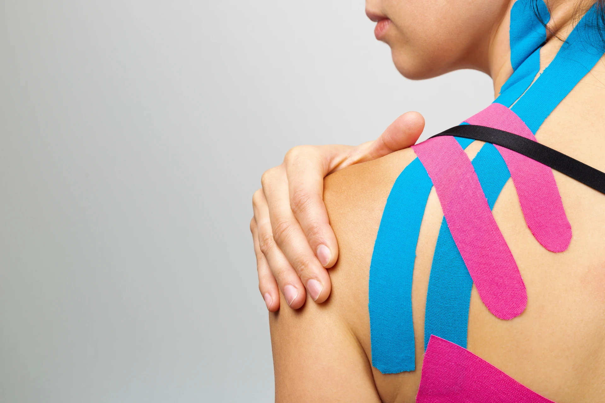

Kinesiotaping Kinesiotaping 
What's Included:
- Intro to Painphysiology, understanding Pain
- How Kinsiotaping works and how to use it
- How to apply it to Periodpain (or other Pain issues)
- Goodie-Bag with a roll of Kinesiotape and a small surprise
Ideal for:
- Individuals looking for non-pharmacological pain relief methods
- Those interested in learning self-care techniques for managing menstrual discomfort
- Anyone seeking to understand the benefits of kinesiotaping for pain management
Das ist enthalten:
- Einführung in die Schmerzphysiologie, Schmerzen verstehen
- Wie Kinesiotaping funktioniert und wie man es anwendet
- Praktische Anwendung bei Regelschmerzen (oder anderen Schmerzbeschwerden)
- Goodie-Bag mit einer Rolle Kinesiotape und kleiner Überraschung
Ideal für:
- Personen, die nach nicht-medikamentösen Methoden zur Schmerzlinderung suchen
- Alle, die Selbsthilfetechniken zur Linderung von Menstruationsbeschwerden erlernen möchten
- Interessierte, die die Vorteile von Kinesiotaping im Schmerzmanagement verstehen wollen
St. Moritz: storytelling and brain-based creative support St. Moritz: Storytelling and brain-based kreative Unterstützung
The neuroathletics workshops in St. Moritz are part of Peter Linden's storytelling seminar. For one week, participants research, plan and write different narrative pieces. As a co-lecturer, I work with the participants on topics such as concentration and focused work. This helps them to stay focused during the writing process and to put their thoughts down on paper clearly and precisely.
Another focus is on sharpening the senses. With the help of exercises that promote perception and mindfulness, participants learn to perceive more subtle impressions – those subtleties that are not obvious at first glance. This ability enables them, on the one hand, to notice a wide variety of details during research and interviews and, on the other hand, to write more empathetic and nuanced texts that reflect reality in a more complex way.
The combination of intense focus, attention to stimuli and openness to new sensory impressions opens up new creative possibilities.
Have a look at our Instagram to see more.
Registration for St.Moritz 2026.
Die Neuroathletik-Workshops in St. Moritz sind Teil des Storytelling-Seminars von Peter Linden. Eine Woche lang recherchieren, planen und schreiben die Teilnehmenden unterschiedliche Erzählstücke. Als Co-Dozent arbeite ich mit den Teilnehmenden unter anderem an den Themen Konzentration und fokussierter Arbeit. Dies hilft vor allem während des Schreibprozesses, fokussiert zu bleiben und Gedanken klar und präzise zu Papier zu bringen.
Ein weiterer Schwerpunkt liegt auf der gezielten Schärfung der Sinne. Mithilfe von Übungen, die die Wahrnehmung und Achtsamkeit fördern, lernen die Teilnehmenden, auch subtilere Eindrücke wahrzunehmen – jene Feinheiten, die auf den ersten Blick nicht offensichtlich sind. Diese Fähigkeit ermöglicht es ihnen einerseits, bei Recherchen und Interviews die verschiedensten Details wahrzunehmen, und andererseits, empathischere und differenziertere Texte zu verfassen, die die Realität vielschichtiger abbilden.
Die Kombination aus intensivem Fokus, Aufmerksamkeit für Reize und Offenheit gegenüber neuen Sinneseindrücken eröffnet neue kreative Möglichkeiten.
Mehr Eindrücke auf Instagram.
Anmeldung für St.Moritz 2026.